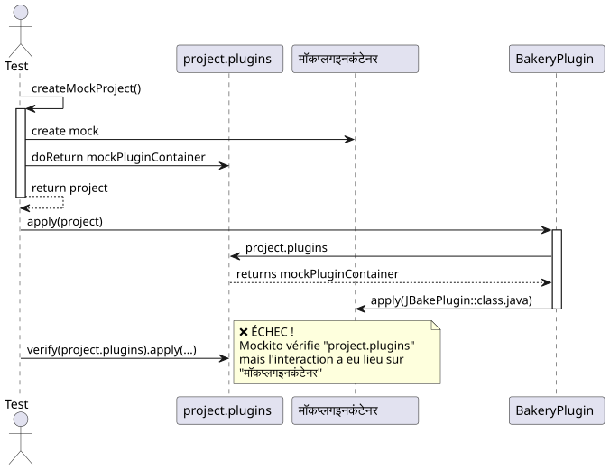
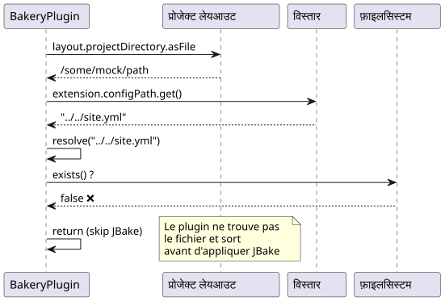
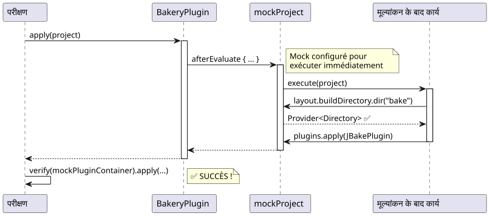

मॉकिटो डिबगिंग: "Wanted but not invoked" त्रुटि को प्लगइन Gradle के परीक्षणों में हल करें
Publié le 17 November 2024
परिचय
Gradle प्लगइन के विकास के दौरानबेकरीमेरे JBake ब्लॉग के लिए, मुझे एक स्पष्ट रूप से सरल समस्या का सामना करना पड़ा: एक इकाई परीक्षण जो त्रुटि के साथ विफल हो रहा था`Wanted but not invoked`. क्या दिख रहा था कि एक तुच्छ बग था, वह साबित हुआ Mockito और Kotlin के साथ मॉकिंग की सूक्ष्मताओं को समझने के लिए एक आदर्श केस स्टडी।
इस लेख में, मैं आपको एक विधिपूर्वक डिबगिंग की यात्रा पर ले जाता हूँ, जहाँ प्रत्येक समाधान एक नई समस्या को उजागर करता है, अंतिम समाधान तक।
संदर्भ: प्लगइन ग्रेडल बेकरी
Bakery प्लगिन JBake के चारों ओर एक रैपर है जो स्थिर साइटों के प्रकाशन को आसान बनाता है। इसकी सरलीकृत संरचना यहाँ है :
class BakeryPlugin : Plugin<Project> {
override fun apply(project: Project) {
val extension = project.extensions.create(
"bakery",
BakeryExtension::class.java
)
project.afterEvaluate {
if (!project.layout.projectDirectory.asFile
.resolve(extension.configPath.get()).exists()) {
println("config file does not exists")
} else {
// C'EST ICI QUE ÇA SE PASSE
project.plugins.apply(JBakePlugin::class.java)
val site = FileSystemManager.from(project, extension.configPath.get())
// Configuration de JBake...
}
}
}
}असफल होने वाला परीक्षण सरल था :
@Test
fun `plugin applies jbake gradle plugin`() {
val project = createMockProject()
val plugin = BakeryPlugin()
plugin.apply(project)
verify(project.plugins).apply(JBakePlugin::class.java)
}त्रुटि :
Wanted but not invoked:
pluginContainer.apply(class org.jbake.gradle.JBakePlugin);
Actually, there were zero interactions with this mock.समस्या #1: खराब मॉक की जाँच करें
निदान

समस्या: Mockito इंटरैक्शन को ट्रेस नहीं कर सकता`project.plugins`क्योंकि यह केवल एक गेटर है जो वास्तविक मॉक लौटाता है`mockPluginContainer`सत्यापन मॉक के इंस्टेंस पर सीधे किया जाना चाहिए।
समाधान
संपादित`createMockProject()`दो ऑब्जेक्ट्स लौटाने के लिए :
private fun createMockProject(): Pair<Project, PluginContainer> {
val mockPluginContainer = mock<PluginContainer>()
val mockProject = mock<Project> {
on { plugins } doReturn mockPluginContainer
}
return Pair(mockProject, mockPluginContainer)
}और परीक्षा को अनुकूलित करें:
@Test
fun `plugin applies jbake gradle plugin`() {
val (project, mockPluginContainer) = createMockProject()
val plugin = BakeryPlugin()
plugin.apply(project)
// ✅ Vérification directe sur le bon mock
verify(mockPluginContainer).apply(JBakePlugin::class.java)
}समस्या #2 : सिलसिलेवार UnfinishedStubbingException
निदान
पहला सुधार लागू होने के बाद, एक नई त्रुटि सामने आई :
UnfinishedStubbingException:
Unfinished stubbing detected here
Hints:
3. you are stubbing the behaviour of another mock inside
before 'thenReturn' instruction is completedसमस्याग्रस्त कोड Mockito-Kotlin की DSL सिंटैक्स का उपयोग कर रहा था :
val mockProject = mock<Project> {
on { extensions } doReturn mockExtensionContainer
on { plugins } doReturn mockPluginContainer
on { logger } doReturn mock() // ❌ PROBLÈME ICI !
}Failed to generate image: PlantUML preprocessing failed: [From <input> (line 4) ]
@startuml
participant "Mockito" as M
participant "मॉक बिल्डर" as MB
participant "python
^^^^^
Syntax Error? (Assumed diagram type: sequence)
@startuml
participant "Mockito" as M
participant "मॉक बिल्डर" as MB
participant "python
इनलाइन मॉक" as IM
M -> MB: mock<Project> { ... }
activate MB
MB -> MB: on { logger } doReturn
MB -> IM: mock()
activate IM
note right
❌ Création d'un nouveau mock
PENDANT le stubbing en cours !
Mockito perd le contexte
du stubbing parent
end note
IM --> MB: nouveau mock
deactivate IM
MB -x M: UnfinishedStubbingException
deactivate MB
@enduml
समाधान
बनानासभीकिसी भी स्टबिंग ब्लॉक के बाहर के मॉक, फिर उन्हेंconfigure करने के साथ`whenever()`(No output)
private fun createMockProject(): Pair<Project, PluginContainer> {
// 1️⃣ Créer TOUS les mocks d'abord
val mockPluginContainer = mock<PluginContainer>()
val mockExtensionContainer = mock<ExtensionContainer>()
val mockLogger = mock<org.gradle.api.logging.Logger>()
val mockProject = mock<Project>()
// 2️⃣ Configurer les mocks séparément avec whenever()
whenever(mockProject.plugins).thenReturn(mockPluginContainer)
whenever(mockProject.extensions).thenReturn(mockExtensionContainer)
whenever(mockProject.logger).thenReturn(mockLogger)
return Pair(mockProject, mockPluginContainer)
}|
स्वर्ण नियमकभी कॉल न करें`mock()`मॉक कॉन्फ़िगरेशन ब्लॉक के अंदर. हमेशा पहले मॉक बनाएं, फिर उन्हें कॉन्फ़िगर करें। |
समस्या #3: कॉन्फ़िगरेशन फ़ाइल मौजूद नहीं है
निदान
हालांकि सही मॉक के साथ, परीक्षण हमेशा विफल रहता था क्योंकि प्लगिन को कॉन्फ़िगरेशन फ़ाइल नहीं मिल रही थी :
// Dans BakeryPlugin.kt
if (!project.layout.projectDirectory.asFile
.resolve(extension.configPath.get()).exists()) {
println("config file does not exists")
return@afterEvaluate // ❌ Sort avant d'appliquer JBake !
}
समाधान
पाथ रिज़ॉल्यूशन काम करने के लिए मॉक को कॉन्फ़िगर करें :
private fun createMockProject(): Pair<Project, PluginContainer> {
// ... autres mocks ...
val configFile = File("../../site.yml").canonicalFile
val projectDir = configFile.parentFile
// Configuration cohérente des chemins
whenever(mockConfigPathProperty.get()).thenReturn("site.yml")
whenever(mockProjectDirectory.asFile).thenReturn(projectDir)
// Maintenant : projectDir.resolve("site.yml") existe ! ✅
}समस्या #4 : afterEvaluate और NullPointerException
निदान
प्लगिन JBake को एक ब्लॉक में लागू करता है`afterEvaluate`, और पहुँचता है`buildDirectory.dir()`(No output)
project.afterEvaluate {
// ...
project.tasks.withType(JBakeTask::class.java)
.getByName("bake").apply {
output = project.layout.buildDirectory
.dir(site.bake.destDirPath) // ❌ NPE ici !
.get()
.asFile
}
}मॉक का`buildDirectory.dir()वह वापस आ रहा था`null.
समाधान
मॉकर`afterEvaluate`ताकि वह तुरंत चल सके, और पूरी तरह से कॉन्फ़िगर करें`buildDirectory`(no output)
private fun createMockProject(): Pair<Project, PluginContainer> {
// ... autres mocks ...
val mockBuildDirectory = mock<DirectoryProperty>()
val buildDir = File(projectDir, "build")
// Mocker dir() pour retourner un Provider valide
whenever(mockBuildDirectory.dir(any<String>())).doAnswer { invocation ->
val path = invocation.arguments[0] as String
val mockDirProvider = mock<Provider<Directory>>()
val mockDir = mock<Directory>()
whenever(mockDir.asFile).thenReturn(File(buildDir, path))
whenever(mockDirProvider.get()).thenReturn(mockDir)
mockDirProvider
}
// Mocker afterEvaluate pour exécution immédiate
whenever(mockProject.afterEvaluate(any<Action<Project>>())).doAnswer { invocation ->
val action = invocation.arguments[0] as Action<Project>
action.execute(mockProject) // ✅ Exécution synchrone
null
}
return Pair(mockProject, mockPluginContainer)
}
पूर्ण समाधान
यहाँ फ़ंक्शन है`createMockProject()`अंतिम, जो सभी समस्याओं को हल करता है:
private fun createMockProject(): Pair<Project, PluginContainer> {
// 1️⃣ CRÉER tous les mocks (pas de nested mocks !)
val mockPluginContainer = mock<PluginContainer>()
val mockExtensionContainer = mock<ExtensionContainer>()
val mockLogger = mock<org.gradle.api.logging.Logger>()
val mockTaskContainer = mock<TaskContainer>()
val mockConfigPathProperty = mock<Property<String>>()
val mockBakeryExtension = mock<BakeryExtension>()
val mockProjectDirectory = mock<Directory>()
val mockBuildDirectory = mock<DirectoryProperty>()
val mockProjectLayout = mock<ProjectLayout>()
val mockProject = mock<Project>()
// 2️⃣ CONFIGURER la résolution des chemins
val configFile = File("../../site.yml").canonicalFile
val projectDir = configFile.parentFile
val buildDir = File(projectDir, "build")
whenever(mockConfigPathProperty.get()).thenReturn("site.yml")
whenever(mockConfigPathProperty.isPresent).thenReturn(true)
whenever(mockBakeryExtension.configPath).thenReturn(mockConfigPathProperty)
whenever(mockProjectDirectory.asFile).thenReturn(projectDir)
// 3️⃣ CONFIGURER buildDirectory avec dir()
whenever(mockBuildDirectory.dir(any<String>())).doAnswer { invocation ->
val path = invocation.arguments[0] as String
val mockDirProvider = mock<Provider<Directory>>()
val mockDir = mock<Directory>()
whenever(mockDir.asFile).thenReturn(File(buildDir, path))
whenever(mockDirProvider.get()).thenReturn(mockDir)
mockDirProvider
}
// 4️⃣ ASSEMBLER le projet
whenever(mockProjectLayout.projectDirectory).thenReturn(mockProjectDirectory)
whenever(mockProjectLayout.buildDirectory).thenReturn(mockBuildDirectory)
whenever(mockExtensionContainer.create("bakery", BakeryExtension::class.java))
.thenReturn(mockBakeryExtension)
whenever(mockExtensionContainer.getByType(BakeryExtension::class.java))
.thenReturn(mockBakeryExtension)
whenever(mockProject.extensions).thenReturn(mockExtensionContainer)
whenever(mockProject.plugins).thenReturn(mockPluginContainer)
whenever(mockProject.tasks).thenReturn(mockTaskContainer)
whenever(mockProject.layout).thenReturn(mockProjectLayout)
whenever(mockProject.logger).thenReturn(mockLogger)
whenever(mockProject.projectDir).thenReturn(projectDir)
// 5️⃣ CONFIGURER afterEvaluate pour exécution immédiate
whenever(mockProject.afterEvaluate(any<Action<Project>>())).doAnswer { invocation ->
val action = invocation.arguments[0] as Action<Project>
action.execute(mockProject)
null
}
return Pair(mockProject, mockPluginContainer)
}और अंतिम परीक्षा जो पास होती है:
@Test
fun `plugin applies jbake gradle plugin`() {
val (project, mockPluginContainer) = createMockProject()
val plugin = BakeryPlugin()
plugin.apply(project)
verify(mockPluginContainer).apply(JBakePlugin::class.java) // ✅ SUCCÈS !
}सीखे गए सबक

1. सही मॉक की जाँच करें
// ❌ FAUX
verify(project.plugins).apply(JBakePlugin::class.java)
// ✅ CORRECT
val (project, mockPluginContainer) = createMockProject()
verify(mockPluginContainer).apply(JBakePlugin::class.java)2. नेस्टेड मॉक से बचें
// ❌ FAUX - UnfinishedStubbingException
val mockProject = mock<Project> {
on { logger } doReturn mock() // Nested mock creation !
}
// ✅ CORRECT - Créer séparément
val mockLogger = mock<org.gradle.api.logging.Logger>()
val mockProject = mock<Project>()
whenever(mockProject.logger).thenReturn(mockLogger)3. मूल्यांकन कॉलबैक को मॉक करें
// ✅ afterEvaluate doit s'exécuter pour les tests
whenever(mockProject.afterEvaluate(any())).doAnswer { invocation ->
val action = invocation.arguments[0] as Action<Project>
action.execute(mockProject)
null
}4. पथों के समाधान का परीक्षण करें
// Toujours vérifier que les chemins se résolvent correctement
val extension = project.extensions.getByType(BakeryExtension::class.java)
val configPath = extension.configPath.get()
val projectDir = project.layout.projectDirectory.asFile
val resolvedConfig = projectDir.resolve(configPath)
println("Resolved config: ${resolvedConfig.absolutePath}")
println("Exists: ${resolvedConfig.exists()}")अंतिम परीक्षण आर्किटेक्चर
Failed to generate image: PlantUML preprocessing failed: [From <input> (line 20) ]
@startuml
package "परीक्षण परत" {
[Test Class] --> [createMockProject()]
}
package "मॉक सृजन" {
[createMockProject()] --> [Create All Mocks]
[Create All Mocks] --> [Configure Paths]
[Configure Paths] --> [Configure Callbacks]
[Configure Callbacks] --> [Assemble Project]
}
package "मॉक ऑब्जेक्ट्स" {
[Assemble Project] --> [Project Mock]
[Assemble Project] --> [PluginContainer Mock]
[Assemble Project] --> [Extension Mocks]
[Assemble Project] --> [Layout Mocks]
}
package "### ग्रेडल एकीकरण
^^^^^
Syntax Error? (Assumed diagram type: component)
@startuml
package "परीक्षण परत" {
[Test Class] --> [createMockProject()]
}
package "मॉक सृजन" {
[createMockProject()] --> [Create All Mocks]
[Create All Mocks] --> [Configure Paths]
[Configure Paths] --> [Configure Callbacks]
[Configure Callbacks] --> [Assemble Project]
}
package "मॉक ऑब्जेक्ट्स" {
[Assemble Project] --> [Project Mock]
[Assemble Project] --> [PluginContainer Mock]
[Assemble Project] --> [Extension Mocks]
[Assemble Project] --> [Layout Mocks]
}
package "### ग्रेडल एकीकरण
JBake को JBake Gradle प्लगइन का उपयोग करके या JBake CLI को सीधे बुलाकर Gradle बिल्ड में एकीकृत किया जा सकता है:
```kotlin
tasks.register<JavaExec>("bake") {
mainClass.set("org.jbake.launcher.Main")
classpath = configurations["jbake"]
args = listOf(projectDir.absolutePath, "$buildDir/jbake")
}" {
[Test Class] --> [BakeryPlugin]
[BakeryPlugin] --> [Project Mock]
[BakeryPlugin] --> [PluginContainer Mock]
}
package "सत्यापन" {
[Test Class] --> [verify(mockPluginContainer)]
}
@enduml
निष्कर्ष
जो एक साधारण परीक्षण समस्या लग रहा था, वह एक उत्कृष्ट केस स्टडी का उदाहरण साबित हुआ :
-
Kotlin के साथ Mockito की सूक्ष्मताएँ
-
सही वस्तुओं का मॉक करने का महत्व
-
परीक्षण में असिंक्रोनस कॉलबैक का प्रबंधन
-
Gradle प्लगिन में पथ समाधान
प्रणालीगत डिबगिंग, समस्या की प्रत्येक परत को समझते हुए, ने एक मजबूत और संधारणीय समाधान तक पहुँचने में सक्षम बना दिया।
|
सलाह आपके टेस्ट के लिएयदि आप Mockito के साथ "Wanted but not invoked" का सामना करते हैं, तो हमेशा खुद से पूछें: 1. क्या मैं सही mock की जाँच कर रहा हूँ? 2. क्या मेरे सभी मॉक कॉन्फ़िगरेशन ब्लॉक के बाहर बनाए जाते हैं ? 3. क्या मेरे कॉलबैक वास्तव में निष्पादित होते हैं ? 4. क्या मेरे रास्ते सही तरीके से हल हो रहे हैं? |
संसाधन
क्या आपने अपने परीक्षणों में समान समस्याओं का सामना किया है? कृपया टिप्पणियों में अपने अनुभव को साझा करें!